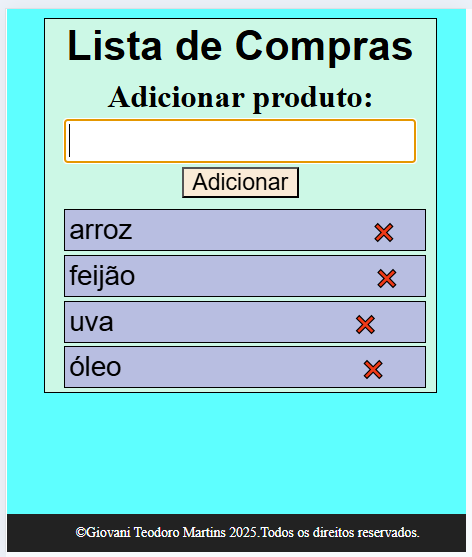
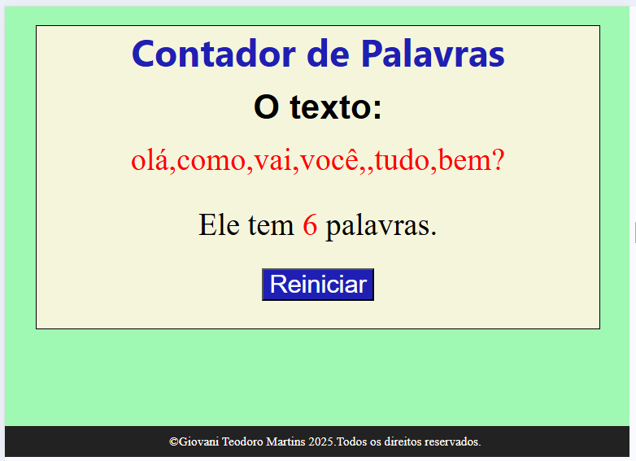

📌 1. Lista de Compras 🛒
O usuário pode adicionar, remover e visualizar os itens da lista.
Use um array para armazenar os itens.
Lista de Compras

📌 2. Gerador de Números Aleatórios 🎲
📌 3. Contador de Palavras em um Texto 📝
O usuário digita um texto, e o programa conta quantas palavras ele escreveu.
Use .split(" ") para transformar a frase em um array de palavras.
Extras: Remover espaços extras antes da contagem.
Contador de palavras
